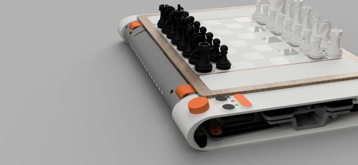
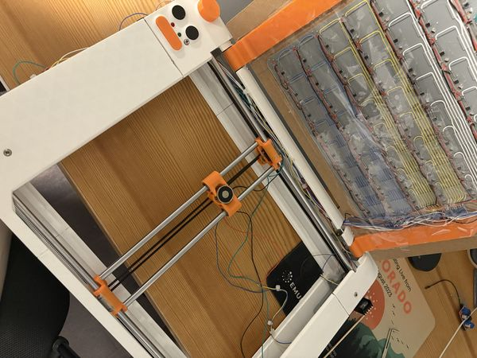
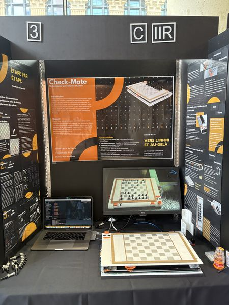

CHECK-MATE, the Automated Chess Board
A real chess board that plays you by itself. A sensor grid reads the positions and a CoreXY gantry carries an electromagnet beneath the board. H.G. Muller's micro-Max engine, adapted and retrofitted for the machine, runs natively on an Arduino with no computer in the loop.
Under each square is a Hall effect sensor detecting pieces, which passes what it sees to the Arduino, which then moves the opposing pieces using the CoreXY gantry.
▶ MK3 playing


See all 10 →- 64Hall effect sensors
- 250+individual components
- 40 mof wiring
- 18months, 3 full builds
- 2 KBthe entire chess engine
- 8Arduino pins for 64 squares
Built to be played with. Difficulty is adjustable through search depth, so a beginner and a stronger player get a game rather than a formality. An LED matrix under the board lights the legal moves for a piece you pick up, and the moves the engine would consider best, which turns a game into a lesson. And every move is announced aloud, so someone who can't easily read a board across the table can still follow the game.
Provincial finalist, Hydro-Québec Science Fair. OIQ (Ordre des ingénieurs du Québec) award for technical complexity, OCTAS Youth Innovation award, and a Université de Sherbrooke scholarship.
Three builds to get here
Across 18 months I prototyped three complete systems to reach a working board. Real geometry below, straight from the CAD.
Neither motor is an axis
CoreXY is a compact but more complex way to get cartesian movement, commonly used in 3D printers. Both motors stay bolted to the frame, so none of their weight moves. The trade is that neither one drives X or Y on its own, since every move is a combination of the two. Drag the magnet, or drive one motor at a time.
one motor alone gives a diagonal, which is the whole idea
64 sensors, 8 pins
Under each square is a Hall effect sensor, which detects not only that a piece is there but also its polarity. Each one has three pins. Power and ground sit on shared rails, so only the signal leg is unique, and the 64 signals fan into four 16-channel multiplexers before reaching the Arduino. Hover a square to follow its path.
the select lines are shared, so all four mux read the same channel at once
Play the firmware
The chess itself is a minimax engine by H.G. Muller, retrofitted for my own chess board's needs: difficulty through search depth, an LED grid for legal moves, and an LED grid for best moves.
The algorithm calculates moves in a tree to see which future branch awards it the most advantage, while minimising the opponent's.
Photos & video
In action
MK3